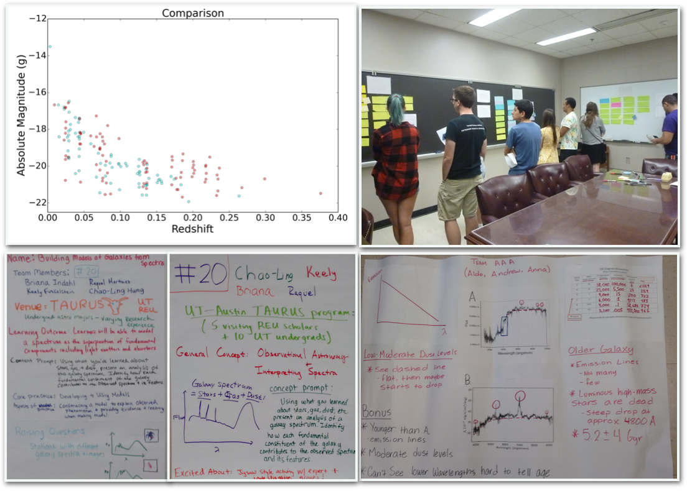
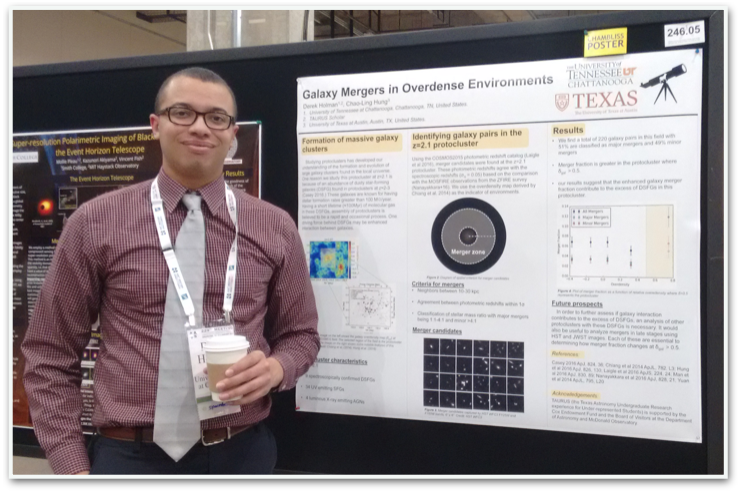

In the past two years, I participated the ISEE PDP at UCSC, where I learned inquiry-based teaching and designed inquiry activities as part of the TAURUS Scholar program. These activities focused on challenging but versatile concepts in astronomy, such as how selection biases in observations can affect the interpretations of astronomical data, and how to build physical models from seemly complicated spectroscopic data. These activities were designed and structured to mirror an authentic research environment, where students can actively engage in scientific practices that are universal to many STEM fields. Students asked and selected the questions that motivated their study. Throughout their collaborative investigations, students would predict the outcome, propose for new observations/further training, and then present a detailed explanation and model given the evidence they gathered.
I am really fortunated to work with many passionated undergraduate researchers on a variety of topics such as galaxy mergers and young galaxy clusters.
Adrianna Perez (2017 TAURUS Scholar) studies star formation in galaxy mergers using a suite of high resolution simulations from the FIRE project.
Richard Seifert (UT undergraduate) studies the gas content in protocluster environment using submillimeter imaging data.
Derek Holman (2016 TAURUS Scholar) studies the importance of galaxy mergers in a young, proto galaxy cluster at redshift of 2.
Aaron Weiner (2014 Harvard summer scholar) studies UV-FIR SEDs of a sample of late-stage galaxy mergers compiled by cross-referencing Galaxy Zoo morphology classifications and IRAC faint source catalog.

Derek presented his research "Galaxy Mergers in Overdense Environments" at 2017 AAS meeting in Grapevine, TX.
I've developed and taught active learning curricula for Physics and Astronomy courses, including calculus-based Mechanics, Electricity and Magnetism at Manhattan College, and Survey of Astronomy at University of Hawaii.